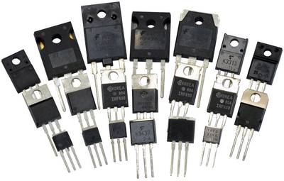
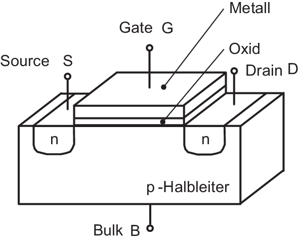

Feldeffekttransistoren (FET)
Ein Feldeffekttransistor (FET, Field Effect Transistor) ist ein Halbleiterbauelement, das den Stromfluss durch ein elektrisches Feld steuert und in vielen analogen sowie digitalen Schaltungen verwendet wird. Er hat im Vergleich zu Bipolartransistoren den Vorteil eines geringen Eingangsstroms und eignet sich gut für Anwendungen, bei denen die Steuerung mit einer Spannung anstatt eines Stroms erforderlich ist.
Note
Dies macht ihn für Mikrocontroller (digitale IO) essenziell, da diese ausschließllich mit Spannung arbeiten. Er ist zudem deutlich schneller im schalten als ein gewöhnlicher Bipolartransistor.
FETs haben drei Hauptanschlüsse: Gate (G), Drain (D) und Source (S). Die Funktion des FET basiert darauf, dass die Spannung am Gate den Stromfluss zwischen Drain und Source steuert. Es gibt zwei Hauptarten von FETs:
- Junction FET (JFET): Arbeitet mit einem p-n-Übergang.
- MOSFET (Metal-Oxide-Semiconductor FET): Verwendet eine isolierte Gate-Schicht und ist vielseitiger in der Anwendung.

Note
Der metallige oder kunststoffige Aufsatz (mit Loch) ist die Grundplatte auf welcher ein optionales Kühlelement aufgesetzt werden kann.
MOSFET: Aufbau und Funktionsweise
Der MOSFET (Metal-Oxide-Semiconductor Field Effect Transistor) ist der am häufigsten verwendete FET-Typ und besteht aus vier Anschlüssen: Gate (G), Drain (D), Source (S) und Bulk (oder Body, B). MOSFETs lassen sich in zwei Haupttypen unterteilen:
- N-Kanal-MOSFET: Der Kanal besteht aus Elektronen, die sich zwischen Source und Drain bewegen.
- P-Kanal-MOSFET: Der Kanal besteht aus Löchern, die als positive Ladungsträger agieren.
Die Besonderheit des MOSFET liegt in der isolierten Gate-Schicht aus Siliziumdioxid (SiO₂), die das Gate vom Kanal trennt und es so ermöglicht, den Kanalstrom durch eine Spannung am Gate zu steuern, ohne dass dabei ein signifikanter Strom fließt. Das macht den MOSFET ideal für Spannungssteuerungen mit geringer Leistungsaufnahme.

Funktionsweise des MOSFET im Detail
MOSFETs können in zwei Betriebsmodi verwendet werden:
- Verarmungsmodus: Der Kanal leitet, wenn keine Spannung am Gate anliegt.
- Anreicherungsmodus: Der Kanal leitet erst, wenn eine bestimmte Gate-Source-Spannung angelegt wird.
In der Praxis sind Anreicherungs-MOSFETs gebräuchlicher, da sie als elektronische Schalter verwendet werden können und eine hohe Effizienz aufweisen.
Gate-Source-Spannung ()
Die Spannung bestimmt, ob der MOSFET "eingeschaltet" (leitend) oder "ausgeschaltet" (nichtleitend) ist. Für einen n-Kanal-MOSFET muss positiv und über einer Schwellenspannung liegen, damit ein leitfähiger Kanal zwischen Drain und Source entsteht.
- Anschalten: Wenn
- Ausschalten: Wenn
Drain-Source-Strom () und Betriebsbereiche
Der Stromfluss wird von der Spannung (Drain-Source-Spannung) und beeinflusst. Ein MOSFET hat typischerweise drei Betriebsbereiche:
Abschnittsbereich (ohmscher Bereich): Hier verhält sich der MOSFET wie ein Widerstand und ist nur teilweise leitend. wobei eine Konstante ist, die von der Geometrie und den Materialeigenschaften des MOSFET abhängt.
Sättigungsbereich (aktiver Bereich): Der MOSFET ist vollständig leitend, und der Strom ist nahezu unabhängig von . In diesem Bereich eignet sich der MOSFET ideal als Verstärker.
Abschaltbereich: Hier liegt , und es fließt kein Strom durch den Kanal.
Wichtige Kenngrößen und Berechnungen
Transkonduktanz : Sie ist ein Maß dafür, wie effizient das Gate den Drain-Source-Strom steuert. Eine höhere Transkonduktanz bedeutet eine höhere Verstärkungsfähigkeit des MOSFETs.
Schwellenspannung : Dies ist die Mindestspannung am Gate, bei der ein leitfähiger Kanal gebildet wird.
Kanallänge und Kanalbreite: Diese Parameter beeinflussen die Stromtragfähigkeit und die Geschwindigkeit des MOSFETs.
Praktische Anwendungen
MOSFETs sind sehr vielseitig einsetzbar und bilden die Grundlage der digitalen Elektronik:
Schalter: MOSFETs werden als elektronische Schalter verwendet, da sie durch eine Spannung am Gate ein- und ausgeschaltet werden können, ohne dass ein hoher Steuerstrom nötig ist. Dies ist besonders in Logikgattern und Mikroprozessoren wichtig.
Verstärker: Im Sättigungsbereich wirkt der MOSFET als Verstärker und wird in Hochfrequenz- und Leistungsschaltungen eingesetzt.
Spannungswandler: MOSFETs werden auch in DC-DC-Wandlern und Schaltnetzteilen verwendet, da sie hohe Spannungen effizient schalten können.
MOSFET im Verstärkermodus
Angenommen, ein n-Kanal-MOSFET hat die folgenden Eigenschaften:
- Schwellenspannung
- Gate-Source-Spannung
- Proportionalitätskonstante
Der Drain-Source-Strom im Sättigungsbereich lässt sich dann berechnen als:
Zusammenfassung
MOSFETs sind aufgrund ihrer Effizienz, hohen Schaltgeschwindigkeit und geringen Leistungsaufnahme sehr beliebt in der Elektronik. Sie können als Schalter oder Verstärker eingesetzt werden und sind in digitalen und analogen Schaltungen essenziell. Der geringe Eingangssteuerstrom und die hohe Spannungssteuerbarkeit machen sie zu einer besseren Wahl als Bipolartransistoren in modernen Anwendungen wie Mikroprozessoren, Leistungsschaltungen und Hochfrequenzverstärkern.